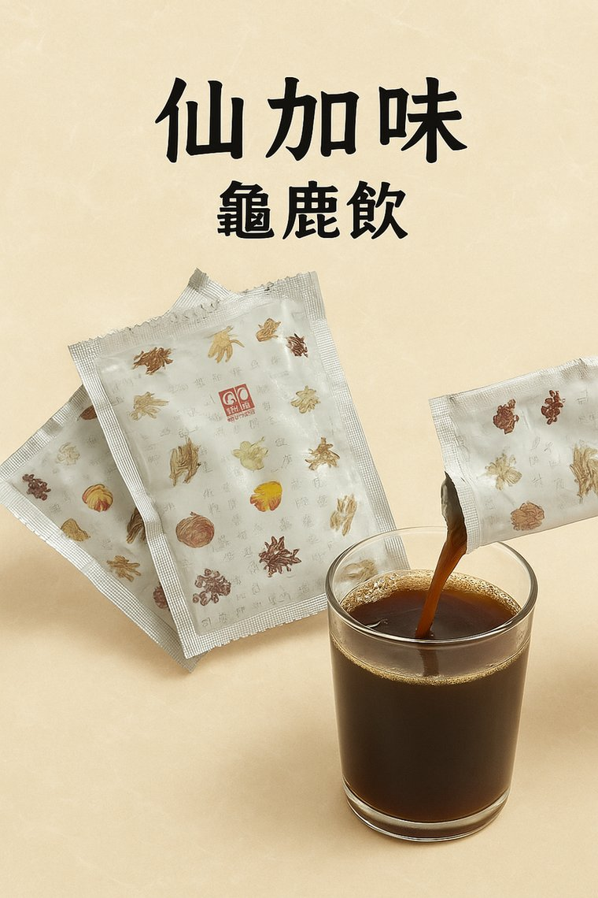

仙加味 龜鹿飲
古法慢熬，每一口都是溫潤的日常補養。
SINCE 1978
台興山產・仙加味｜漢方高級養身品牌
台興山產源自臺北萬華，從曾祖父與祖父白手起家，到坪林山林親手養鹿， 一路走來始終堅持只用看得見、說得清楚的好原料。
因長年專研鹿角、熟悉每一段鹿角的品質與特性，祖父在行內被親切稱為「鹿角」， 晚輩口中則多了一聲敬重的「鹿角伯」。祖父名字中帶有「興」， 也成為「台興山產」商號的核心精神──象徵把這份手藝與信用一代一代興旺延續。
從龜鹿飲、龜鹿膏到嚴選駝鹿角，仙加味希望讓補養不再遙遠， 而是像日常一杯溫熱的飲品，用得起，也吃得安心。
查看仙加味產品
依照不同生活型態，台興山產將龜鹿補養分成液態保養、膏方濃縮與原料級駝鹿角， 讓你可以依照日常習慣，自在選擇最適合自己的補養方式。
古法慢熬，每一口都是溫潤的日常補養。
承襲家傳熬膠工藝，適合重視實在補養的族群。
分級挑選、氣味清雅，深受中藥房與養身品牌長年合作信賴。